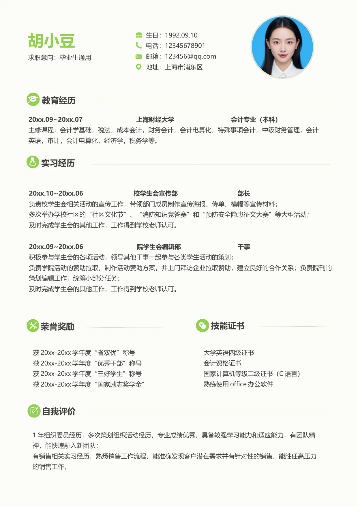

1 年组织委员经历，多次策划组织活动经历，专业成绩优秀，具备较强学习能力和适应能力，有团队精
神，能快速融入新团队；
有销售相关实习经历，熟悉销售工作流程，能准确发现客户潜在需求并有针对性的销售，能胜任高压力
的销售工作。
教育经历
20xx.09~20xx.07 上海财经大学 会计专业（本科）
主修课程：会计学基础，税法，成本会计，财务会计，会计电算化，特殊事项会计，中级财务管理，会计
英语，审计，会计电算化，经济学，税务学等。
技能证书
大学英语四级证书
会计资格证书
国家计算机等级二级证书（C 语言）
熟练使用office 办公软件
获20xx-20xx 学年度“省双优”称号
获20xx-20xx 学年度“优秀干部”称号
获20xx-20xx 学年度“三好学生”称号
获20xx-20xx 学年度“国家励志奖学金”
荣誉奖励
生日：1992.09.10
电话：12345678901
邮箱：123456@qq.com
地址：上海市浦东区
胡小豆
求职意向：毕业生通用
实习经历
20xx.10~20xx.06 校学生会宣传部 部长
负责校学生会相关活动的宣传工作，带领部门成员制作宣传海报、传单、横幅等宣传材料；
多次举办学校社区的“社区文化节”、“消防知识竞答赛”和“预防安全隐患征文大赛”等大型活动；
及时完成学生会的其他工作，工作得到学校老师认可。
20xx.09~20xx.06 院学生会编辑部 干事
积极参与学生会的各项活动，领导其他干事一起参与各类学生活动的策划；
负责学院活动的赞助拉取，制作活动赞助方案，并上门拜访企业拉取赞助，建立良好的合作关系；负责院刊的
策划编辑工作，统筹小部分任务；
及时完成学生会的其他工作，工作得到学校老师认可。
自我评价